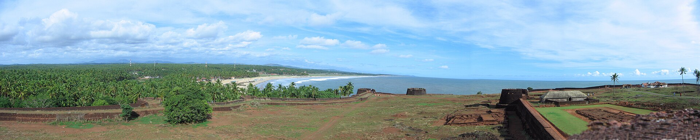
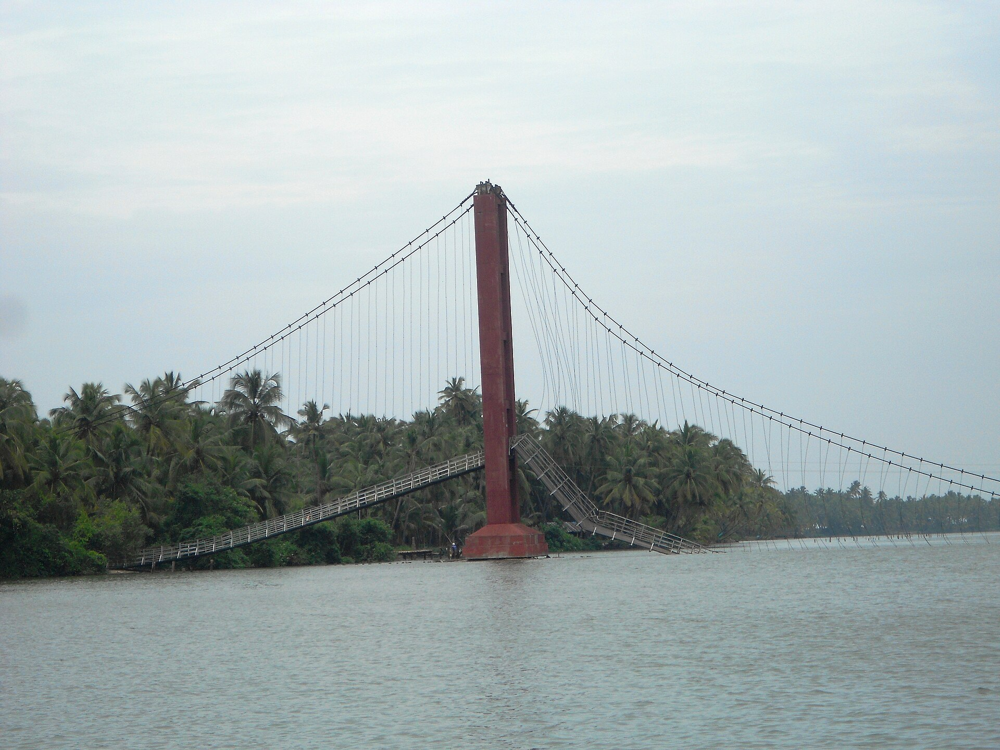
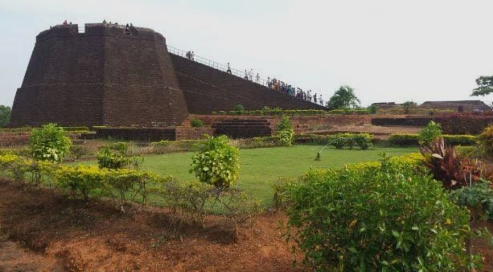
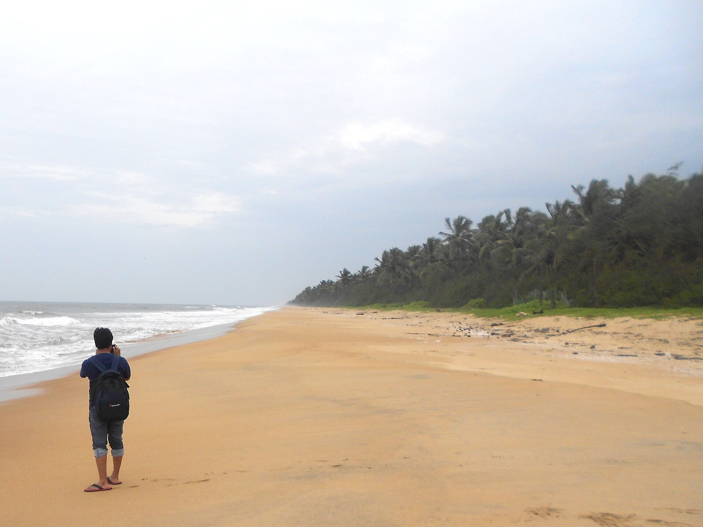

A JOURNEY THROUGH KASARAGOD, KERALA
WINGS OF
KASARAGOD
Where the Land Meets the Sky,
and Nature Finds Its Wings.
Discover the Destinations. Explore the Biodiversity. Follow the Wings. · A FIELD GUIDE BY SHIJIN.

01 / THE LANDSCAPE
AN EXTRAORDINARY
WORLD, RIGHT HERE.
From quiet backwaters and open shores to laterite forts and mist-brushed hills, Kasaragod holds a remarkable meeting of land, water and life.
Valiyaparamba bridge · photo credit
02 / THE DISTRICT
A LAND OF MANY
HORIZONS.
A fort above the sea. Waterways braided through the coast. Hills rising at the district’s edge. Explore Kasaragod one place at a time.

01 / 12COASTAL LANDMARK
Bekal Fort
& Beach
Begin with a landmark that meets the Arabian Sea. Open the field note for sourced history, visitor context and what has—and has not—been documented about its wildlife.
Bekal Fort · Prathvi Acharya / Wikimedia Commons · CC BY-SA 4.0
These are places to discover, not a list of bird sanctuaries. Bird records are included only where a source documents them.
03 / FIND YOUR WAY
PLACES, ON
THE GROUND.
Explore verified map anchors across Kasaragod. Some pins mark a mapped village or locality, not the boundary of an estuary, wetland or hill landscape.
Map data © OpenStreetMap contributors
04 / THE FIELD GUIDE
THE WORLD
OF WINGS.
From shorebirds at a low-tide flat to forest-edge visitors, meet birds recorded in published local studies. An occurrence note is not a promise that a bird will be seen today.
Bird photographs illustrate species; they are not evidence of a Kasaragod sighting. Local occurrence is supported separately by the studies and records cited in each profile.
No birds match that combination. Clear a filter or try another spelling.
THE WIDER RECORD
BEYOND THIS
FIELD GUIDE.
The cards above are curated profiles, not the entire district checklist. Explore the regional species lists and their community bird photographs through the specialist databases below.
Record-count note. A news report dated 26 October 2026 says the district total reached 421 after a Black-breasted Weaver record at Cheemeni Ariyittapara. That reported total is not the same thing as a published, downloadable 421-row checklist. The 57 profiles on this page remain the curated, illustrated field guide; the links above open the broader regional databases and photo galleries.
QUIZ
LOOK CLOSELY
Can you identify
this bird?
A locally documented bird, selected from the field guide. Think first, then reveal its name and a fact.
The answer will appear here.
05 / MOVING WITH THE SEASONS
ACROSS CONTINENTS,
INTO OUR SKIES.
Migration is a seasonal movement between places birds use at different times of year. Food, suitable breeding habitat and changing daylight help explain why some birds move. Routes and timing differ by species. Wetlands can offer feeding and resting places along a journey.
At Chemmattamvayal, a 2014–2018 study classified 42 recorded species as winter migrants. Garganey and Common Teal are named in its checklist. That local evidence supports a seasonal story here—but not a single route or arrival date for every bird.
READ THE STUDY NOTES06 / FIVE FIELD NOTES
WHERE THE
RECORDS MEET.
A bird count belongs to the study that produced it. Read each finding with its place, period and limitations.
07 / LIVING SYSTEMS
WHERE
NATURE LIVES.
Habitats connect food, shelter and breeding places. Explore the landscape types named in the assignment and the careful actions that help protect them.
Habitat panels explain general ecological relationships. They do not claim that every bird listed occurs in every habitat of Kasaragod.
08 / A WIDER JOURNEY
BEYOND KASARAGOD —
DISCOVER KERALA.
These places sit elsewhere in Kerala. They are a wider state-wide nature journey, not Kasaragod district attractions.
From the Western Ghats to wetlands on the coast, each landscape has its own geography, wildlife and conservation story.
09 / THE VISUAL JOURNAL
LANDSCAPE.
WINGBEAT.
A small, credited collection of places and habitats. Choose a chapter, open a photograph and move through the gallery with the keyboard.
Each image caption names the depicted location. A representative image is labeled as such rather than presented as a photograph of another destination.
10 / A CLOSER LOOK
DID YOU
KNOW?
Small, sourced details can change the way we look at an ordinary shoreline, a familiar call or a quiet patch of water.
11 / CARE FOR THE LAND
THE FUTURE OF NATURE
IS IN OUR HANDS.
Wetland change, pollution, habitat loss, deforestation and disturbance around nests can place pressure on birds and the places they depend on. Even a careful visitor can make a difference.
“WHEN WE PROTECT THEIR HABITATS,
WE PROTECT OUR FUTURE.”
12 / READ THE EVIDENCE
SOURCES &
REFERENCES.
Science is strongest when you can trace a claim. These sources support the destination notes, species records, map anchors and image credits on this page.
FIELD STUDIES & LOCAL RECORDS
DESTINATIONS, MAP & PHOTOGRAPHS
Full creator and licence details for reused photographs are also listed in the project’s photo credits file.
Historical survey totals refer to the study area and dates cited. A photographed individual, district checklist or tourism-page estimate is not presented as a current population count.

THE JOURNEY CONTINUES
EVERY LANDSCAPE
HAS A STORY.
EVERY BIRD HAS A JOURNEY.
EVERY HABITAT DESERVES A FUTURE.
WINGS OF KASARAGOD
Explore. Discover. Protect.EXPLORE AGAINValiyaparamba Beach · Alertedlevel2 / Wikimedia Commons · CC BY 3.0